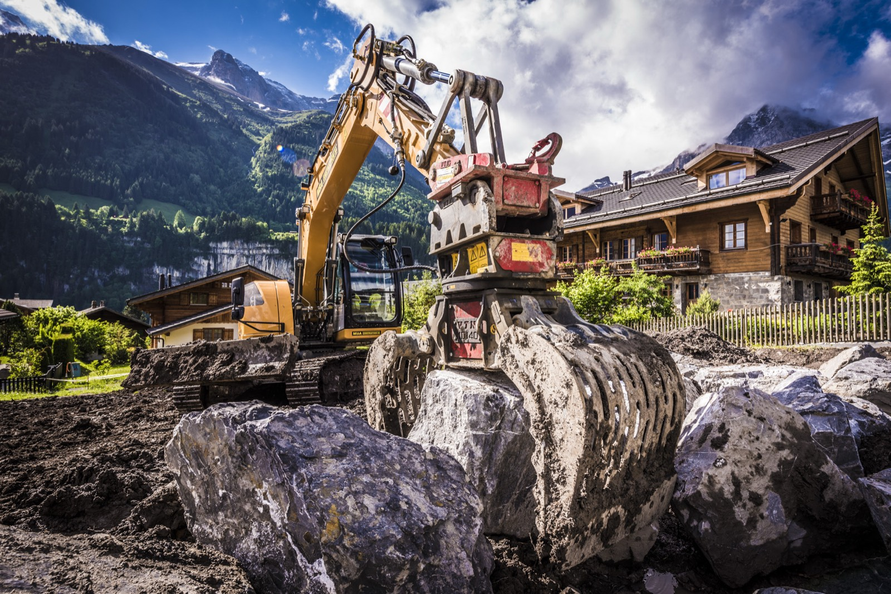

Implantée à Martigny, MBA Construction SA incarne depuis 2001 la passion du métier, l'exigence du travail bien fait et l'engagement d'une famille dans le monde de la construction en Valais. À l'heure où l'entreprise approche le cap symbolique du quart de siècle, une chose n'a pas changé : la volonté de livrer des ouvrages solides, soignés et durables, en restant proche des clients et du terrain.
Spécialisée dans le gros œuvre, la maçonnerie, le béton armé et les travaux de terrassement, MBA Construction SA accompagne aussi bien les particuliers que les professionnels dans la réalisation de leurs projets, du simple mur de soutènement à la construction de villas ou d'immeubles résidentiels. Un parcours qui raconte autant une histoire de famille qu'une histoire de territoire.
Une histoire de famille et de transmission
MBA Construction SA naît en 2001 de l'ambition de Giovanni Mascolo, maçon de métier, formé au métier de contremaître et animé par l'envie de voler de ses propres ailes. À l'époque, la structure est modeste, mais les intentions sont claires : travailler sérieusement, respecter les engagements, soigner les chantiers et construire une entreprise qui s'ancre durablement en Valais.
Au fil des années, l'activité se développe, les équipes grandissent et la société se diversifie dans les métiers du gros œuvre, tout en restant fidèle à ses racines. MBA Construction SA devient la colonne vertébrale d'un véritable groupe familial, autour duquel se structurent d'autres entités complémentaires dans la promotion, la construction générale ou encore les services au chantier.
Aujourd'hui, la relève est assurée par la seconde génération, avec Raphaël Mascolo qui reprend progressivement les rênes tout en bénéficiant encore de l'expérience de son père. Cette transition en douceur illustre parfaitement l'esprit de la maison : s'appuyer sur l'expérience, sans renoncer à la modernité ni à la volonté d'aller de l'avant.

Des valeurs humaines au cœur du quotidien
MBA Construction SA revendique depuis ses débuts une taille humaine et un fonctionnement fondé sur la proximité. L'entreprise s'appuie sur des équipes fidèles, qualifiées et attachées à la qualité du travail bien exécuté. Cette dimension humaine se ressent tant sur les chantiers que dans les relations avec les clients et les partenaires.
La satisfaction du client, le respect des délais, la transparence dans les échanges et la rigueur dans l'exécution sont des principes qui accompagnent chaque projet, qu'il s'agisse d'une petite intervention ou d'un chantier plus conséquent. Le lien de confiance, construit au fil des années avec les maîtres d'ouvrage, les architectes, les régies et les entreprises partenaires, fait partie des véritables forces de la société.
Cette culture d'entreprise se transmet aussi en interne : la formation, la montée en compétences et la stabilité des équipes sont encouragées, afin de préserver un savoir-faire et un état d'esprit communs. Les 25 ans de MBA Construction SA sont aussi 25 ans de parcours professionnels partagés avec de nombreux collaborateurs, certains présents depuis de longues années sur les chantiers de la région.
Un savoir-faire solide dans le gros œuvre
Si MBA Construction SA a su évoluer au fil du temps, son cœur de métier reste clair : le gros œuvre. Maçonnerie, béton armé, murs de soutènement, enrochements, travaux de terrassement, constructions neuves et rénovations structurantes constituent le quotidien de l'entreprise.
Active principalement en Valais central jusqu'à Sion et dans le Chablais vaudois, la société intervient sur un large spectre de projets : villas individuelles, petits immeubles résidentiels, transformations, ouvrages de soutènement, aménagements extérieurs et travaux de génie civil en lien avec des partenaires spécialisés.
Ce qui fait la différence, ce n'est pas uniquement la liste des prestations, mais la manière de les mener : préparation minutieuse des chantiers, coordination avec les autres intervenants, respect des plans et des contraintes techniques, souci constant de la sécurité et de la qualité d'exécution. L'objectif est simple : livrer des ouvrages solides, propres et conformes aux attentes, sur lesquels les clients peuvent s'appuyer en toute confiance.

Un rôle clé au sein d'un groupe complémentaire
Au fil du temps, MBA Construction SA s'est intégrée dans un ensemble plus large d'entreprises familiales, où chaque entité joue un rôle précis. MBA Immobilier SA développe et commercialise des promotions résidentielles à taille humaine, en coordination avec les sociétés sœurs chargées de la construction et des finitions. D'autres structures viennent compléter le dispositif sur les aspects logistiques et de services au chantier.
Dans cette organisation, MBA Construction SA occupe une place centrale : celle du spécialiste du gros œuvre. Les promotions imaginées par MBA Immobilier SA peuvent ainsi être réalisées en grande partie « à la maison », avec une maîtrise plus complète de la qualité, des délais et des interfaces entre les métiers. Pour le client final, cette synergie se traduit par des projets cohérents, mieux suivis et pensés sur l'ensemble de la chaîne, du terrain au bâtiment livré.
25 ans d'expérience, et l'avenir en ligne de mire
Fêter 25 ans d'activité, ce n'est pas seulement regarder en arrière. Pour MBA Construction SA, cet anniversaire marque surtout une étape dans un parcours qui continue de s'écrire. Le secteur de la construction évolue, les exigences techniques se renforcent, les enjeux énergétiques et environnementaux prennent de l'ampleur, et les attentes des clients se précisent.
Dans ce contexte, la combinaison entre l'expérience acquise et l'énergie de la nouvelle génération représente un atout majeur. Fortement ancrée à Martigny, à la Rue du Châble-Bet 41, l'entreprise reste proche de son territoire tout en restant attentive aux évolutions du marché et aux nouvelles façons de concevoir, de planifier et de construire.
Les 25 prochaines années s'annoncent peut-être différentes, mais l'essentiel demeure : continuer à bâtir sérieusement, avec des équipes engagées, un savoir-faire reconnu et une relation de confiance avec les clients. En Valais comme dans le Chablais, MBA Construction SA entend bien poursuivre ce qu'elle fait depuis 2001 : poser des fondations solides, au sens propre comme au figuré.